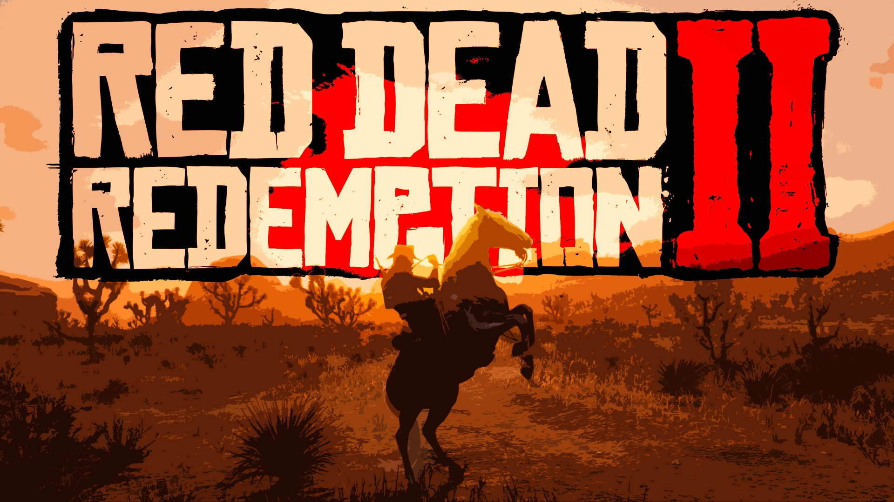
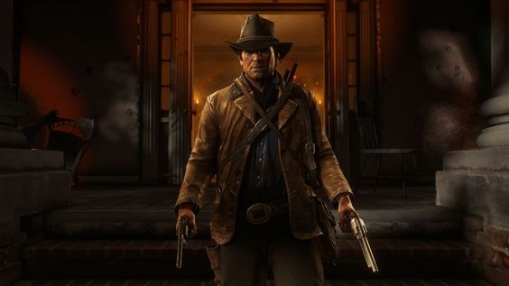
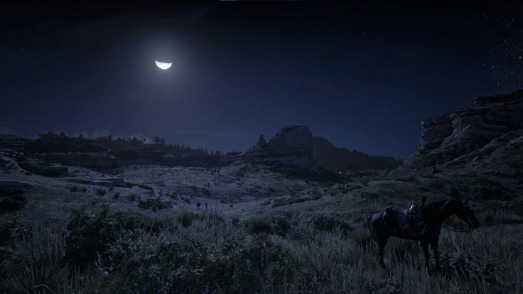
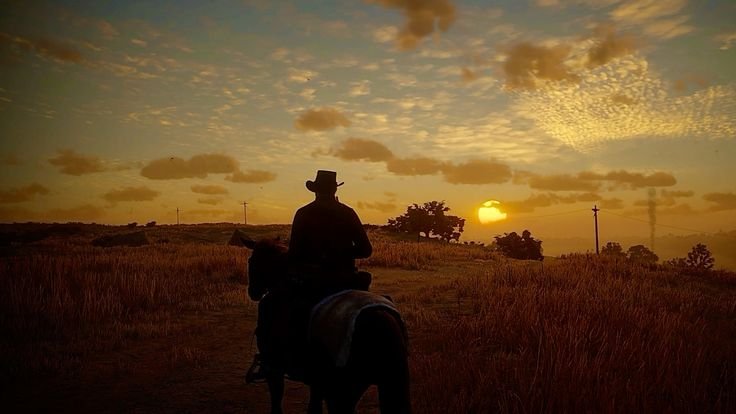

"Red Dead Redemption 2" é um épico de ação e aventura desenvolvido pela Rockstar Games e lançado em 2018. O jogo se passa no final do século XIX, durante o declínio da era dos foras-da-lei e o avanço da civilização moderna nos Estados Unidos. O enredo segue Arthur Morgan, um membro da gangue Van der Linde, enquanto ele enfrenta a pressão da lei e dos rivais, lutando para manter sua família unida em um mundo que está mudando rapidamente. A narrativa rica e os personagens profundos fazem de RDR2 um dos jogos mais imersivos e aclamados da última década.
"Red Dead Redemption 2" se destaca não apenas pela sua impressionante produção visual, mas também pela sua narrativa envolvente e detalhada. O jogo oferece um mundo aberto vasto e vivo, recriando o Velho Oeste com uma atenção meticulosa aos detalhes. A Rockstar Games conseguiu criar uma sensação de realismo e imersão sem precedentes, permitindo que os jogadores vivenciem a vida de um fora-da-lei com uma profundidade emocional e uma complexidade narrativa notáveis. A interação com o ambiente e os personagens é tão detalhada que o jogador pode passar horas explorando o mundo, realizando missões secundárias e se aprofundando em histórias pessoais dos personagens.
Entre os aspectos inovadores de RDR2 estão sua mecânica de interação com o mundo e o sistema de moralidade. O jogo apresenta um ciclo de vida dinâmico, com mudanças de clima e um ciclo de dia e noite que afeta a jogabilidade e as interações. O sistema de honra, que afeta como outros personagens reagem ao protagonista, é uma característica marcante que oferece um nível adicional de profundidade moral. Além disso, o jogo incorpora uma série de atividades secundárias, como caça, pesca e até mesmo trabalho em uma fazenda, o que contribui para uma experiência de jogo rica e diversificada.
A recepção crítica de "Red Dead Redemption 2" foi extremamente positiva, com muitos elogiando sua narrativa, personagens e a fidelidade ao período histórico retratado. O jogo recebeu diversos prêmios e foi aclamado por sua capacidade de oferecer uma experiência emocionalmente envolvente e tecnicamente impressionante. Sua influência vai além dos videogames, impactando a forma como histórias interativas são contadas e apreciadas. RDR2 é frequentemente citado como um exemplo de como os jogos podem ser uma forma de arte, oferecendo uma narrativa complexa e um mundo imersivo que desafia os limites da mídia.
Feito por Gabriel Holanda Costa para de alguma forma contribuir para a sociedade.